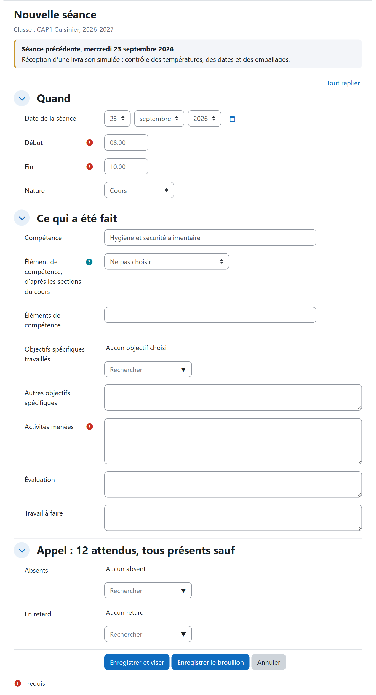
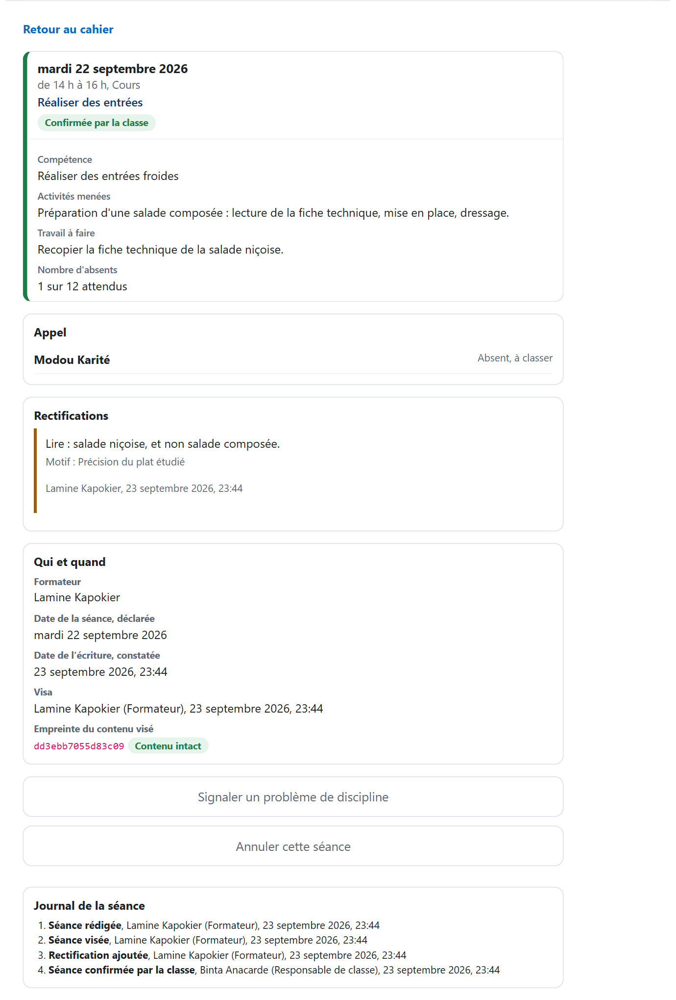
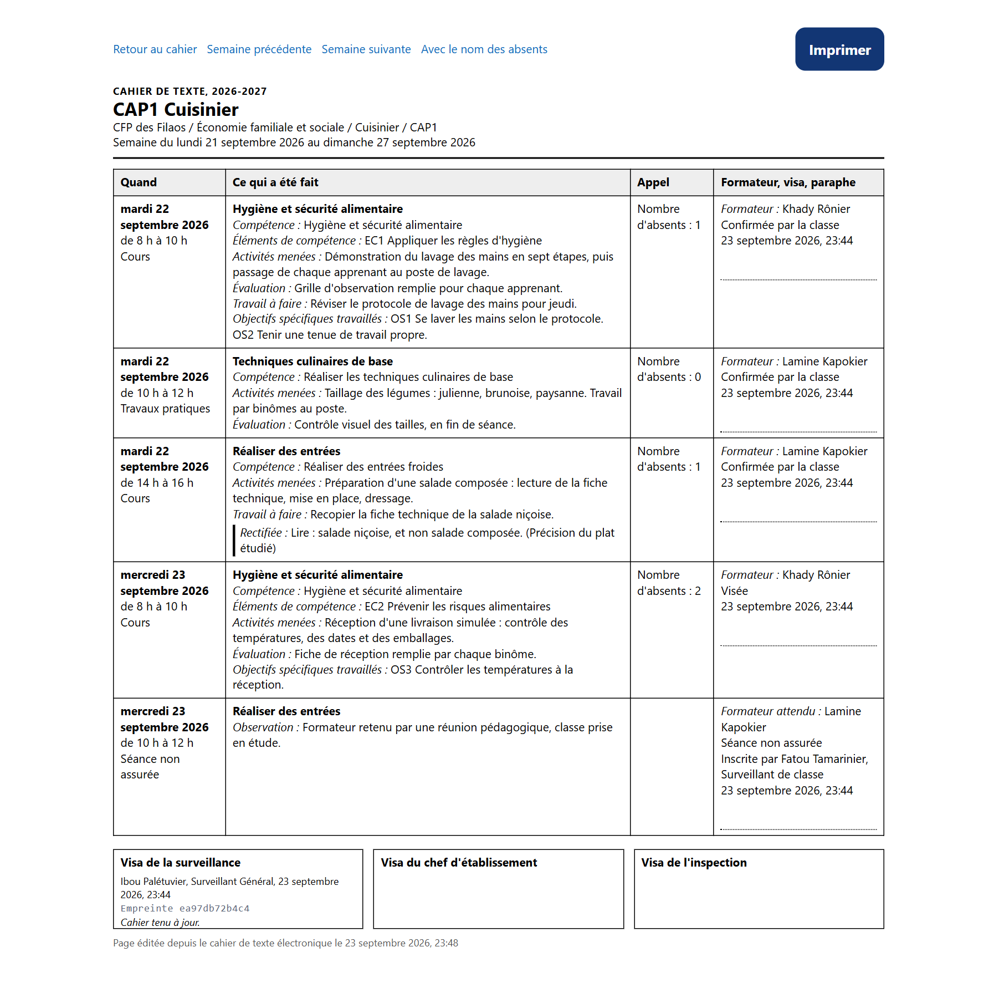
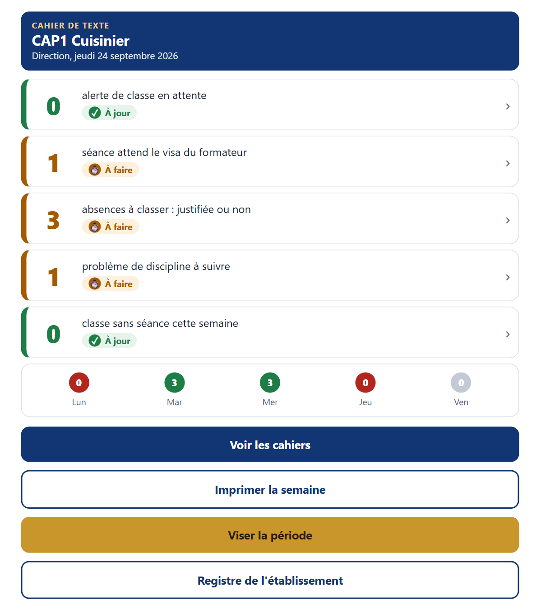
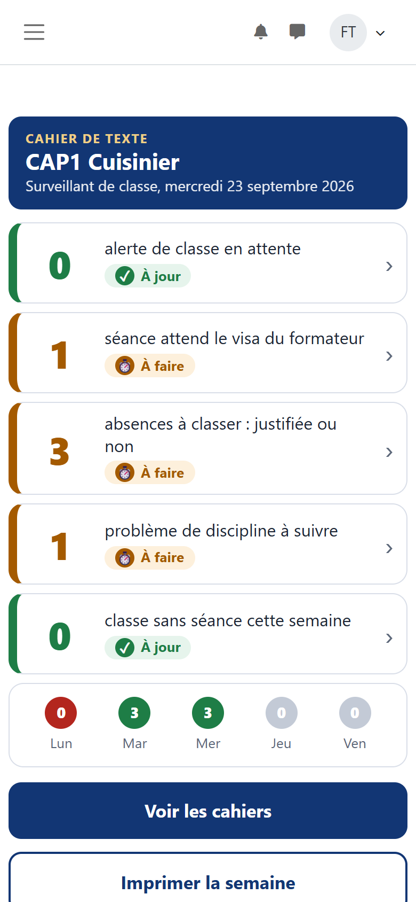

Le problème
Dans un établissement de formation professionnelle et technique, le cahier de texte est la mémoire contractuelle de la classe. Le formateur y inscrit chaque séance : la compétence travaillée, les activités, l'évaluation, les absents. La surveillance le tient à jour. La direction le vise, l'inspection le contrôle. Sur papier, il ne se lit qu'en le tenant entre les mains.
Une plateforme d'apprentissage connaît des cours et des participants. Elle ne connaît ni la classe, ni la semaine, ni le visa. Aucune extension existante ne tenait ce document. Celle-ci a donc été écrite, avec trois exigences qui semblent se contredire.
Trois exigences
La preuve. Un cahier que l'on peut réécrire ne prouve rien. Or une plateforme est faite pour modifier ce qu'on y dépose.
L'adhésion. Un outil vécu comme une surveillance des formateurs est tenu en double, puis abandonné. Il doit d'abord servir celui qui écrit.
La discrétion. Les absences et les faits de discipline concernent des apprenants, dont certains sont mineurs. Ils ne doivent être lus que par ceux qui en ont la charge.
Le principe retenu
Rien ne s'efface. Une erreur se corrige par une écriture de plus, signée et datée. L'original reste lisible. Chaque geste porte un nom, une qualité et une date, comme une signature au bas du cahier papier.
Le cahier est utile au formateur avant d'être utile au contrôle. La séance précédente lui est rappelée, les objectifs spécifiques de son cours lui sont proposés, l'appel se fait par exception : « tous présents sauf ».
Aucun texte ne donne encore valeur au cahier électronique. Pendant le pilote, le cahier papier fait donc foi. L'établissement n'écrit pourtant qu'une fois : il saisit sur la plateforme, imprime la page de la semaine, la signe et la verse au cahier papier.
Écrire une séance

Le formateur enregistre et vise d'un même geste. Une saisie faite en retard n'est jamais refusée : elle est marquée comme telle. La refuser pousserait à antidater. La date de la séance est déclarée par le formateur, la date de l'écriture est constatée par la plateforme. Les deux figurent sur la séance.
La preuve

| Règle | Ce qu'elle empêche |
|---|---|
| une séance visée ne se modifie plus | réécrire discrètement ce qui a été fait |
| une erreur se corrige par une rectification motivée, signée et datée | effacer une erreur au lieu de la reconnaître |
| chaque séance visée porte l'empreinte de son contenu | modifier une séance sans que cela se voie |
| chaque visa de période est rattaché au précédent | remanier une semaine déjà visée, même des mois plus tard |
| la classe confirme ou conteste chaque séance | inscrire une séance qui n'a pas eu lieu |
L'empreinte est une preuve de non-altération. Ce n'est pas une signature électronique au sens juridique. C'est pourquoi la page imprimée porte l'empreinte de chaque visa : le cahier papier, signé et versé, garde la trace hors de la plateforme.
La page de la semaine

C'est une page à imprimer et non un document à télécharger : elle reste légère et s'imprime depuis un téléphone. Aucun fait de discipline n'y figure jamais. Le nom des absents n'y apparaît que sur demande expresse : cette demande est tracée.
Le tableau de bord


Cinq tuiles, toujours dans le même ordre. L'état de chacune se dit de trois façons à la fois : une couleur, un pictogramme et un mot. Toute la tuile est le bouton. Trois niveaux, jamais plus : la tuile, la liste, la fiche.
Le silence n'est pas vert. Une classe où personne n'écrit n'apparaît jamais comme à jour : elle est comptée dans la dernière tuile. Le surveillant de classe, le surveillant général et la direction ont le même écran. Seul le périmètre change.
Qui fait quoi
| Acteur | Son rôle dans le cahier |
|---|---|
| Formateur | rédige et vise ses séances, fait l'appel |
| Responsable de classe | un apprenant choisi par sa classe : confirme ou conteste la séance, prévient quand le formateur ne vient pas |
| Surveillant de classe | tient le cahier à jour, saisit pour le compte d'un formateur absent, classe les absences, rend compte |
| Surveillant général | supplée, tranche une contestation, vise la période, suit l'établissement |
| Direction | suit le cahier de toutes les classes, appose le visa de la direction |
| Inspection | lit et vise dans son seul périmètre |
| Référent numérique | déclare les classes, règle ce qui se règle, clôture l'année. N'écrit jamais une séance |
La suppléance suit l'ordre de l'établissement : le surveillant de classe, à défaut le surveillant général, à défaut la direction. Chaque écriture dit en quelle qualité elle a été faite.
La discrétion
L'apprenant ordinaire ne voit ni le cahier de sa classe ni le relevé de ses absences. Les absences et les faits de discipline ne sont lus que par ceux qui en ont la charge. Le journal garde qui a fait quoi et quand. Il ne recopie jamais un motif d'absence ni une observation.
Les noms n'entrent pas dans l'empreinte d'une séance. Ils peuvent ainsi être retirés sur demande sans que la séance paraisse altérée. La durée de conservation des données personnelles se règle : une fois échue, le cahier demeure avec ses séances, ses nombres et ses visas, sans les personnes.
Le déploiement
La plateforme nationale se gère par son interface d'administration, sans accès au serveur. L'extension porte donc son propre outillage : une vérification de l'installation en neuf contrôles, puis le réglage des rôles, lu à blanc avant d'être appliqué en une seule confirmation, puis relu. Le dépôt a été répété de bout en bout sur un banc avant d'être fait sur la plateforme nationale.
La vérification
Ce que ce travail ne montre pas
Aucun code source, aucune donnée réelle. Les captures proviennent d'un banc de démonstration : l'établissement, les personnes et les séances y sont inventés. Toute ressemblance de nom avec une personne réelle serait fortuite. Aucune donnée de la plateforme n'est publiée ici.
Ce qui est présenté est la démarche : ce qu'il faut garder d'un document contractuel quand on le fait passer sur une plateforme et ce qu'il faut refuser d'y ajouter.
Extension conçue au sein de la Direction des Curricula et des Innovations Pédagogiques, ministère chargé de la formation professionnelle et technique, Sénégal. Installée sur e-jàng en septembre 2026.
Oumar SALL, technopédagogue et ingénieur pédagogique. Voir les autres réalisations ou le dépôt de présentation.